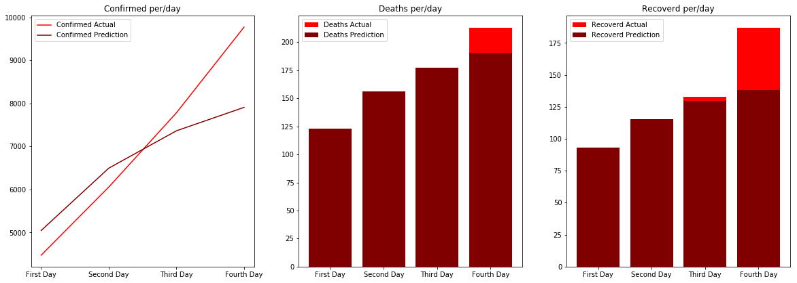
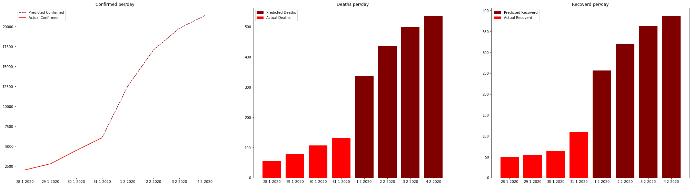

Corona (COVID-19) Next moves
- Ziyad Elbanna -26
Problem Statement
Since the December 2019 outbreak of the #coronavirus (COVD-19) in China, we all have been closely watching the news and listening to speeches about the deadly virus. There is panic everywhere with people wearing masks and others locked in their houses all day to avoid contracting the virus. The disease has
Dataset
Content
2019 Novel Coronavirus (2019-nCoV) is a virus (more specifically, a coronavirus) identified as the cause of an outbreak of respiratory illness first detected in Wuhan, China. Early on, many of the patients in the outbreak in Wuhan, China reportedly had some link to a large seafood and animal market, suggesting animal-to-person spread. However, a growing number of patients reportedly have not had exposure to animal markets, indicating person-to-person spread is occurring. At this time, it’s unclear how easily or sustainably this virus is spreading between people - CDC This dataset has daily level information on the number of affected cases, deaths and recovery from 2019 novel coronavirus. Please note that this is a time series data and so the number of cases on any given day is the cumulative number. The data is available from 22 Jan, 2020.Column Description
Main file in this dataset is covid_19_data.csv and the detailed descriptions are below. covid_19_data.csv Sno - Serial number ObservationDate - Date of the observation in MM/DD/YYYY Province/State - Province or state of the observation (Could be empty when missing) Country/Region - Country of observation Last Update - Time in UTC at which the row is updated for the given province or country. (Not standardised and so please clean before using it) Confirmed - Cumulative number of confirmed cases till that date Deaths - Cumulative number of of deaths till that date Recovered - Cumulative number of recovered cases till that date 2019_ncov_data.csvInput/Output Examples
My project inputs were the outputs of previous levels each time (cases), to predict the new cases. And the model was divided to Decoder, and encoder:
Decoder
y(t) = LSTM(s(t-1), y(t-1)); where s is the hidden state of the LSTM(h and c) y(0) = LSTM(s0, C); C is the context vector from the encoder.Encoder
X = Input sequence C = LSTM(X); The context vector
State of the art
In our project we are trying to predict the number of cases of corona virus as time passes, we will do this by the use of deep learning (ofcourse) ,and specifically by the help of Recurrent Neural Networks and Long short term memory as they perform well in the forecasting activity. This approach is expected to do very well but will also contain some errors like:
Orignial Model from Literature
Description
We used RNN models with LSTM or GRU cells for better performance, preferably with encoders and decoders. We will agree on the design of the LSTM (encoders and decoders) when we have more information about it, but initially:Reason we selected this
In general RNNs work well with prediction problems as it keeps the history into account to be able to forecast the upcoming event or pattern.Proposed Updates
Add all the model updates you made here, need as many images as you wish
Update #1: Used Repeat vectors
In our project, the RepeatVector layer repeats the incoming inputs a specific number of time. The shape of the input in the project example was ( 32 , ). But the output shape of the RepeatVector was ( 3 , 32 ), since the inputs were repeated 3 time
Update #2: Used time distributed layer
This wrapper allows to apply a layer to every temporal slice of an input. The input should be at least 3D, and the dimension of index one will be considered to be the temporal dimension. TimeDistributed layer applies a specific layer such as Dense to every sample it receives as an input. Suppose the input size is ( 13 , 10 , 6 ). Now, I need to apply a Dense layer to every slice of shape ( 10 , 6 ). Then I would wrap the Dense layer in a TimeDistributed layer. model.add( TimeDistributed( Dense( 12 , input_shape=( 10 , 6 ) )) )

Results
Results that I got was for the training set and validation set
Training dataset
Validation dataset
Technical report
Here you will detail the details related to training, for example:
Programming framework
I used python notebook for visualisation, and data processing: The Jupyter Notebook is an open-source web application that allows you to create and share documents that contain live code, equations, visualizations and narrative text. Uses include: data cleaning and transformation, numerical simulation, statistical modeling, data visualization, machine learningTraining time
Train Score: 0.00828682 MSE (0.09103195 RMSE ) , 87.50000000 ACC Validation Score: 0.01224902 MSE (0.11067527 RMSE ) , 37.50000000 ACCNumber of epochs
Number of epochs I used was 50Time per epoch
4ms per step of epochConclusion
I learnt alot frfom this project. Especially, dealing with LSTM and time-distributed dense layers, and the future work will be to follow the coronavirus cases every day , to see the new accuracy and plot the graphs
References